ISP 影像介紹及影像處理(二)
此篇文章繼續介紹ISP基本介紹與處理影像的功能。

Contents
| 項次 | 名稱 | 前往內容 |
|---|---|---|
| 9. | Gamma ➞ 亮度/色彩 曲線。 | 😀 |
| 10. | High Dynamic Range(HDR) ➞ 高動態範圍。 | 😀 |
| 11. | Sharpness ➞ 銳利度。 | 😀 |
| 12. | HSV ➞ 色彩空間 。 | 😀 |
| 13. | Lens Distortion Correction(LDC) ➞ 鏡頭變形校正 | 😀 |
Y gamma：
用在影像檔案時，Gamma 是一種影像資訊演算法，目的是為了在 8bit 有限的資源內，儲存符合人類視覺的色彩資訊，雖然增加了暗部的檔案資訊，但是也會改變顯現出來的顏色，有些格式會以 color profile 的方式將 Gamma 設定嵌入檔案內，有利於之後的 Gamma 修正，是以 1/Gamma 這樣數值來儲存。
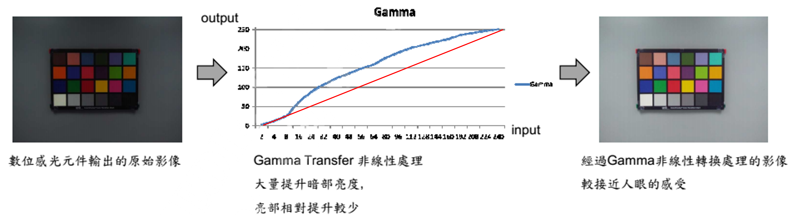
為何要做Gamma 校正
我們的眼睛不像相機那樣感知光線。對於數位相機，當兩倍數量的光子撞擊感測器時，它會接收兩倍的訊號（「線性」關係）。很符合邏輯，對吧？我們的眼睛不是這樣運作的。相反，我們認為兩倍的光只亮了一小部分——並且隨著光強度的增加，這種情況越來越明顯（「非線性」關係）。

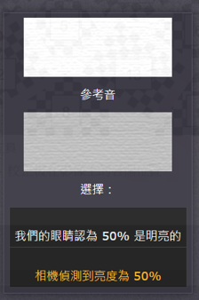
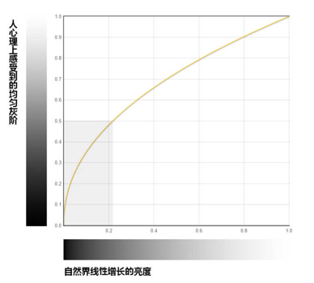
如何做Gamma 校正
以SigmaStar IQ Tool 說明:
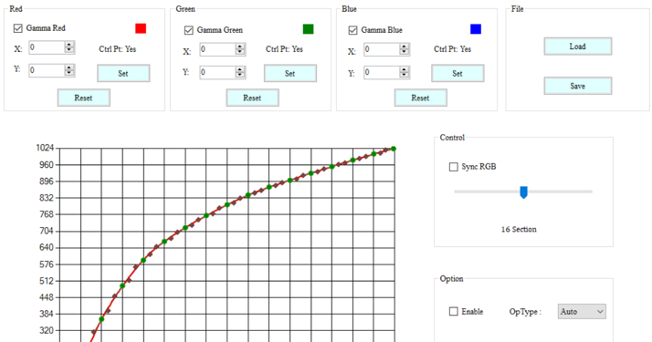
對比度(contrast)：是描述圖像或顯示裝置中明暗差異程度的物理量，它是影像處理和顯示技術中一個重要的性能指標。
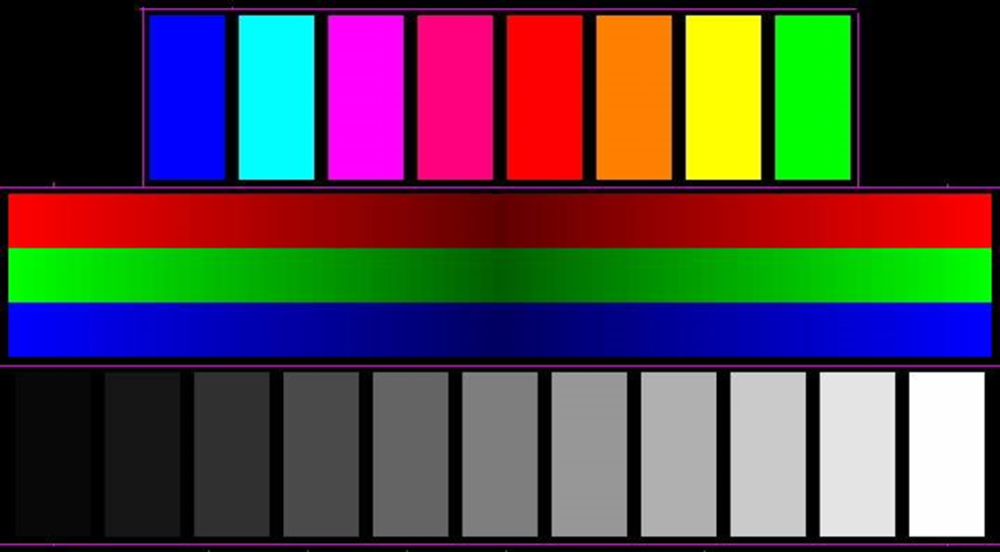
High Dynamic Range (HDR)
何謂High Dynamic Range（高動態範圍HDR）
一種用於影像、影片及顯示器的技術。它的核心目的，是讓畫面能同時展現極度明亮與極度暗沉的細節，使畫面更接近人類肉眼所看到的真實世界。
如果場景的亮度動態範圍較寬，則可能包含無法在顯示裝置中清楚呈現的資訊。因此，拍攝的圖像可能會缺失亮區或暗區細節。如果攝像頭感測器支援高動態範圍 (HDR)，拍攝 HDR 圖像時可將曝光不足和過度曝光的圖像相結合。
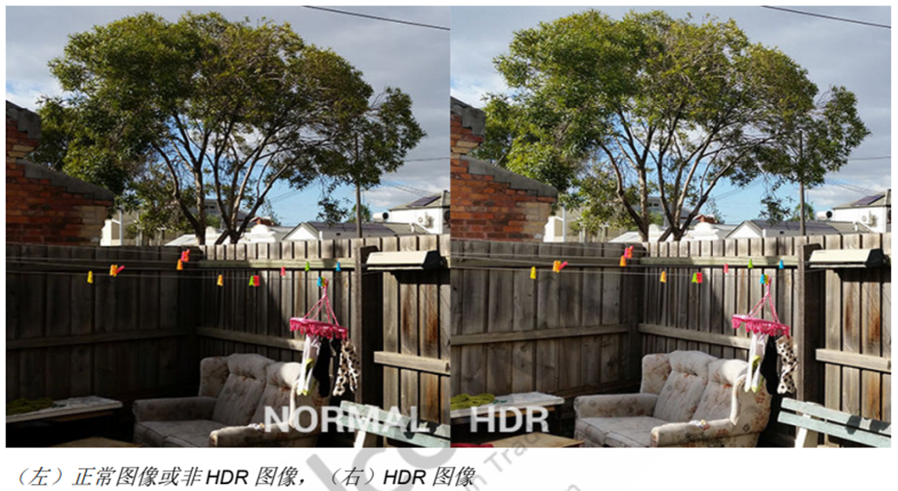
高動態範圍 (HDR) ：透過組合兩張以不同曝光拍攝的照片來保留高光和暗部細節，適用於高對比度的主體。用於為高對比度場景和其他主體保留從高光到暗部的大範圍細節。
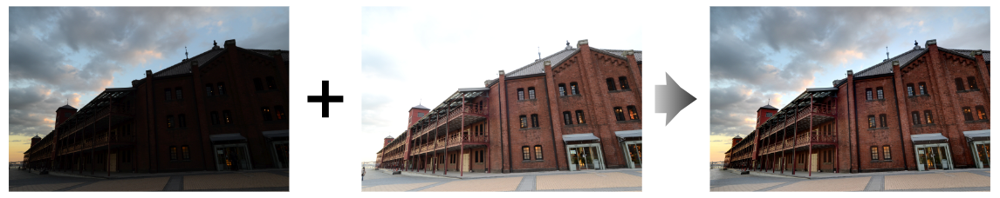
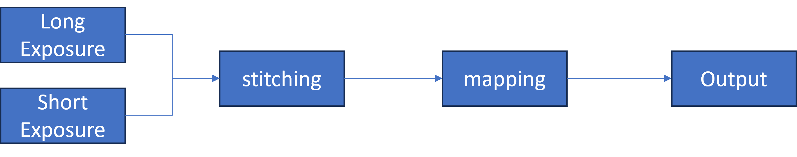
如果場景的亮度動態範圍較寬，則可能包含無法在顯示裝置中清楚呈現的資訊。因此，拍攝的圖像可能會缺失亮區或暗區細節。如果攝像頭感測器支援高動態範圍 (HDR)，拍攝 HDR 圖像時可將曝光不足和過度曝光的圖像相結合。
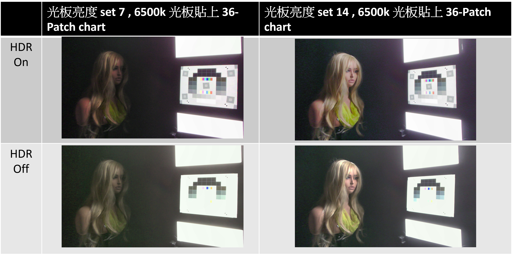
Sharpness(銳度)
銳度(Sharpness) ：用來表示圖像邊緣的對比度，一種更加明確的定義是銳度是亮度對於空間的導數幅度。由於人類視覺系統的特性，高銳度的圖像看起來更加清晰，但是實際上銳度的增加並沒有提高真正的解析度在示例圖像中，在灰色的背景上繪製兩條淺灰的線段。由於可以準確地顯示出顏色的過渡，所看到的線段清晰度就是這個解析度下的銳度。然後在左側線段的外側添加兩條寬為 1 像素的顏色較深的線段，內側添加兩條寬為 1 像素顏色較淺的線段。由於過渡部分寬度變為 4 像素，所以實際邊緣清晰度發生下降，但是由於銳度增大所以看起來更加清晰。
人為增加銳度也是有代價的，在這幅誇張的例圖中，大多數觀察者會看到分離的邊界，並且感覺在線段周圍有一明一暗的光暈存在。
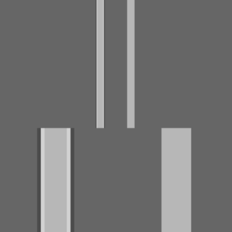
Hue, Saturation, Value(HSV)
色調(Hue) ：又稱“色度” “色相”。描述色彩彼此相互區分的一種特性。它屬於顏色三屬性之一，與照明光源或接收光的波長成分及物體表面的反光特性有關，與顏色的飽和度有關而與其亮度無關，其值由色座標確定。例如，可見光光譜的色調從長波到短波按照紅、橙、黃、綠、青、藍、紫以及許多中間過渡波長排列，在人眼的視覺上表現出各種色調。
色度(Saturation) ：指的是色彩的純度，也叫飽和度或彩度，是「色彩三屬性」之一。如大紅就比玫紅更紅，這就是說大紅的色度要高。它是HSV色彩屬性模式、孟塞爾顏色系統等的描述色彩變量。 從廣義上說，黑色、白色以及灰色是「色度=0」的顏色。在各種色彩模型中，對色度有不同的量化模式。
明度(Value) ：亮度與色調及飽和度有所不同，它指的是光的強度或光的量度。 而色調和飽和度則是與光的顏色有關

色調H(H) ：
用角度度量，取值範圍為0°～360°，從紅色開始按逆時針方向計算，紅色為0°，綠色為120°,藍色為240°。它們的補色是：黃色為60°，青色為180°,紫色為300°。
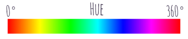
飽和度S(Saturation)：
飽和度S表示顏色接近光譜色的程度。一種顏色，可以看成是某種光譜色與白色混合的結果。其中光譜色所占的比例愈大，顏色接近光譜色的程度就愈高，顏色的飽和度也就愈高。飽和度高，顏色則深而豔。光譜色的白光成分為0，飽和度達到最高。通常取值範圍為0%～100%，值越大，顏色越飽和。
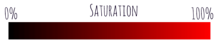
明度V(Value)：
明度表示顏色明亮的程度，對於光源色，明度值與發光體的光亮度有關；對於物體色，此值和物體的透射比或反射比有關。通常取值範圍為0%（黑）到100%（白）。
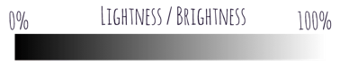
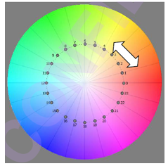
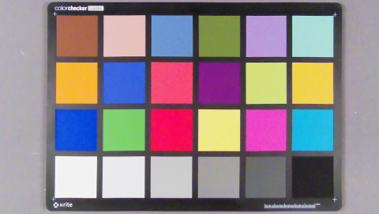
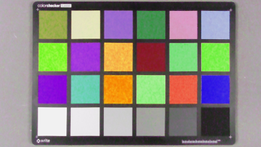
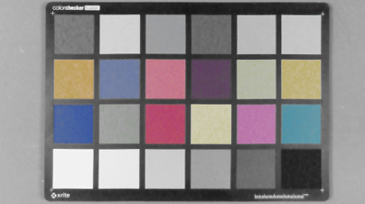

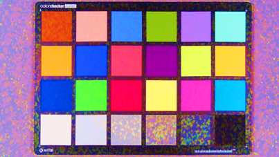
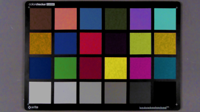
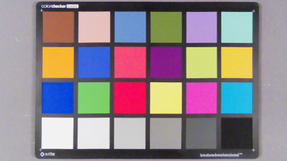
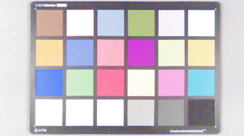